Introduction to Data Visualisation in R
Data visualisation is a crucial step in any data analysis workflow. Whether you’re exploring new data for the first time or verifying the results of transformations, plotting can help you quickly spot errors, outliers, or unexpected patterns. Effective figures also help interpret and communicate your findings—bridging the gap between raw numbers and meaningful insights.
In practice, you’ll often find yourself visualising data multiple times:
- Initial Exploration: Quickly plot raw data (e.g., histograms, scatter plots) to detect outliers, missing values, or irregularities before further cleaning.
- Ongoing Checks: Visualise intermediate results (e.g., boxplots, line graphs) after transformations or calculations to ensure they worked as expected.
- Final Communication: Create polished plots (e.g., stacked bar charts, annotated line graphs) to effectively present your findings to colleagues, collaborators, or in publications.
Below are some common types of plots you’ll encounter and when they’re typically used:
- Line Graphs: Great for showing trends over time or continuous variables. Useful when you want to highlight changes or patterns over an interval.
- Stacked Bar Charts: Ideal for comparing categories and their subcomponents (e.g., total counts split by different groups). Helps show how parts contribute to a whole.
- Boxplots: Summarise distributions of continuous data across discrete categories. Handy for spotting medians, quartiles, and outliers at a glance.
- Histograms: Show the distribution of a single continuous variable by splitting it into bins. Great for detecting skewness or multi-modal distributions.
Watch the recording from this session from 3 March 2025 and checkout the related slides within our Google Drive.
Basic plotting
We will start by showing you how to build a basic plot with theggplot() function. The ggplot() function
creates a blank plot to which you add different functions to build your
data visualisation using the + operator.
There are two main arguments to the ggplot() function,
these are:
data: the name of the data frame we are working withmapping: the columns of the data frame we are plotting. This is created using theaes()command.
aes() stands for “aesthetic” and is used to specify what
we want to show in the plot. We will start by looking at plots of simple
time trends using the malaria incidence data for all ages. First, we
filter the pf_incidence_national data frame forage_group == "total".
total_incidence <-
filter(pf_incidence_national, age_group == 'total')We then start with the ggplot command. We want to use the total incidence dataset and wish to plot the year on the x-axis and the incidence on the y-axis so the command is as follows:
ggplot(data = total_incidence, mapping = aes(x = date_tested, y = incidence))Scatter plots & line graphs
This wont yet produce a figure as we need to tell ggplot what sort of
figure we would like this to be. We will start by making a scatter plot
using geom_point(). We add layers to the ggplot object
using the + operator.
ggplot(data = total_incidence, mapping = aes(x = date_tested, y = incidence))+
geom_point()
We can then control how the points look by adding commands to thegeom_point() function, such as the size, colour and
transparency (alpha) of the points.
ggplot(data = total_incidence, mapping = aes(x = date_tested, y = incidence))+
geom_point(size=5, colour = "blue", alpha = 0.5)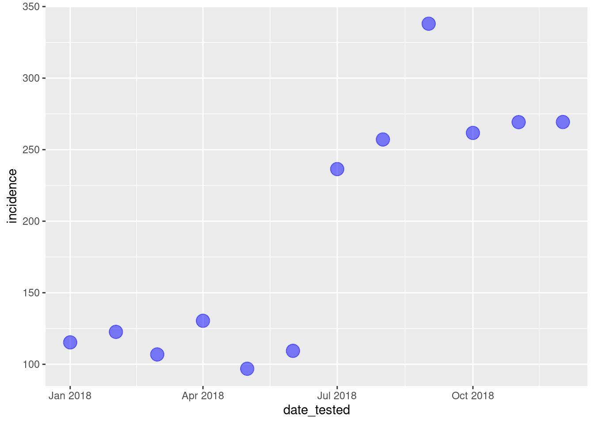
We can also change the type of the point by using theshape = command.
ggplot(data = total_incidence, mapping = aes(x = date_tested, y = incidence))+
geom_point(size=4, colour = 'blue', alpha = 0.5, shape = 18)
# Available shapes (don't run)
shapes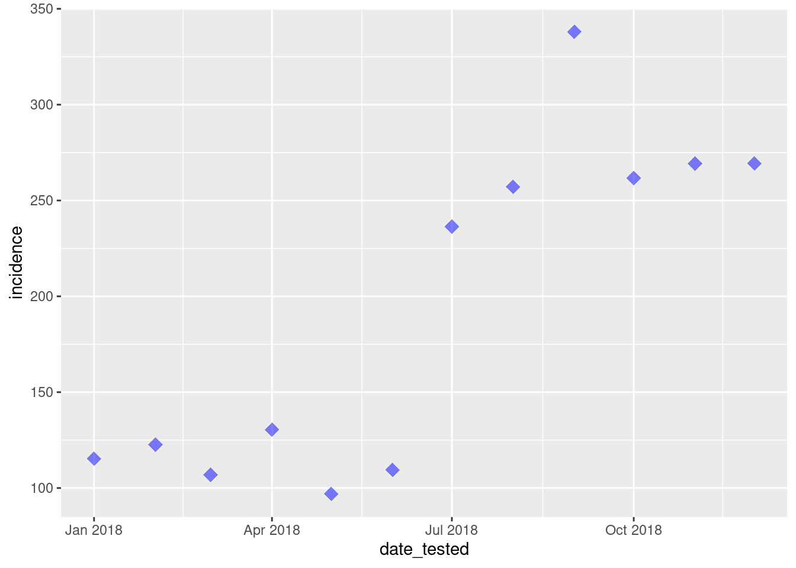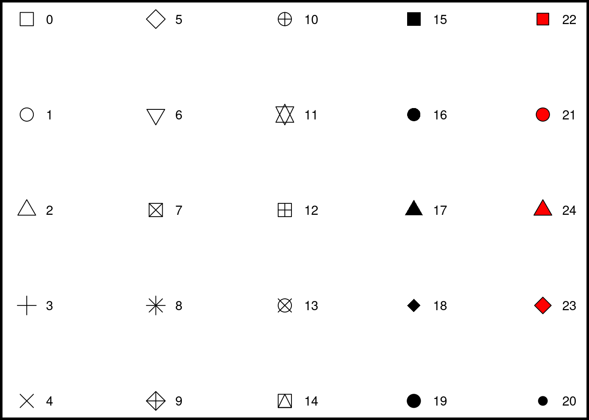
The general structure of the ggplot() command remains
similar for different plots.This means that it is easy to change the
type of an established plot, or create a different plot using a similar
code structure.
We can change the type of plot by replacing geom_point()
with other options such as a line graph: geom_line(), or
smoothed conditional means: geom_smooth().
# Line plot
ggplot(data = total_incidence, mapping = aes(x = date_tested, y = incidence))+
geom_line(size=2, colour = "red", alpha = 0.5)
# Smoothed line of fit
ggplot(data = total_incidence, mapping = aes(x = date_tested, y = incidence))+
geom_smooth(colour = "yellow") 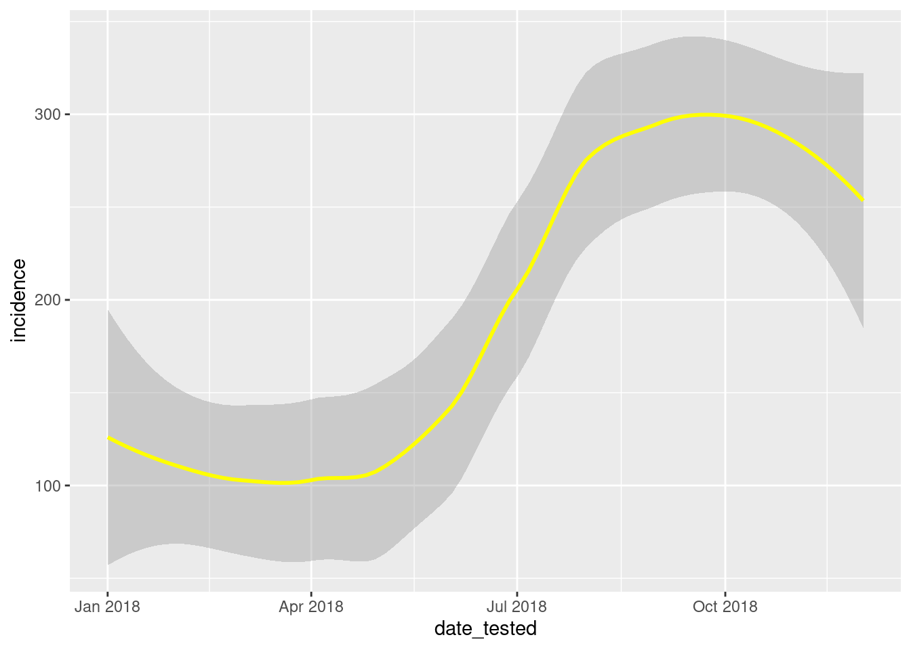
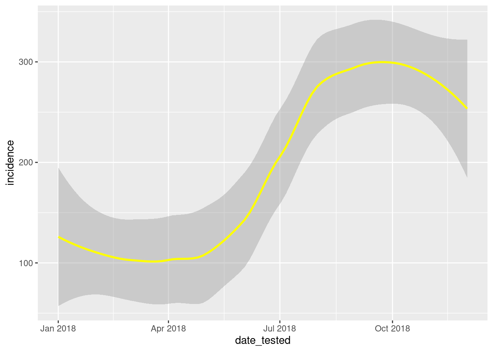
The size, colour and alpha commands are similarly used to control the
appearance of the line but instead of using shape = to
control the appearance of the points we can change the style of the line
in a line plot by specifying linetype =
ggplot(data = total_incidence, mapping = aes(x = date_tested, y = incidence))+
geom_line(size=2, colour = "red", alpha = 0.5, linetype = 'dashed')
# Available line types (not run)
lty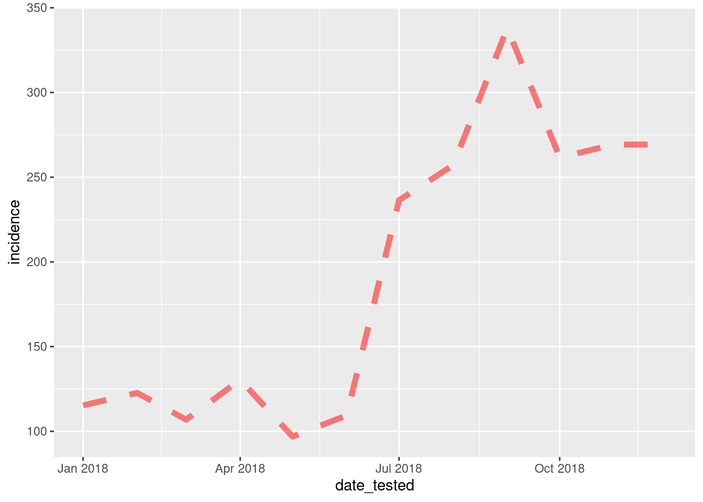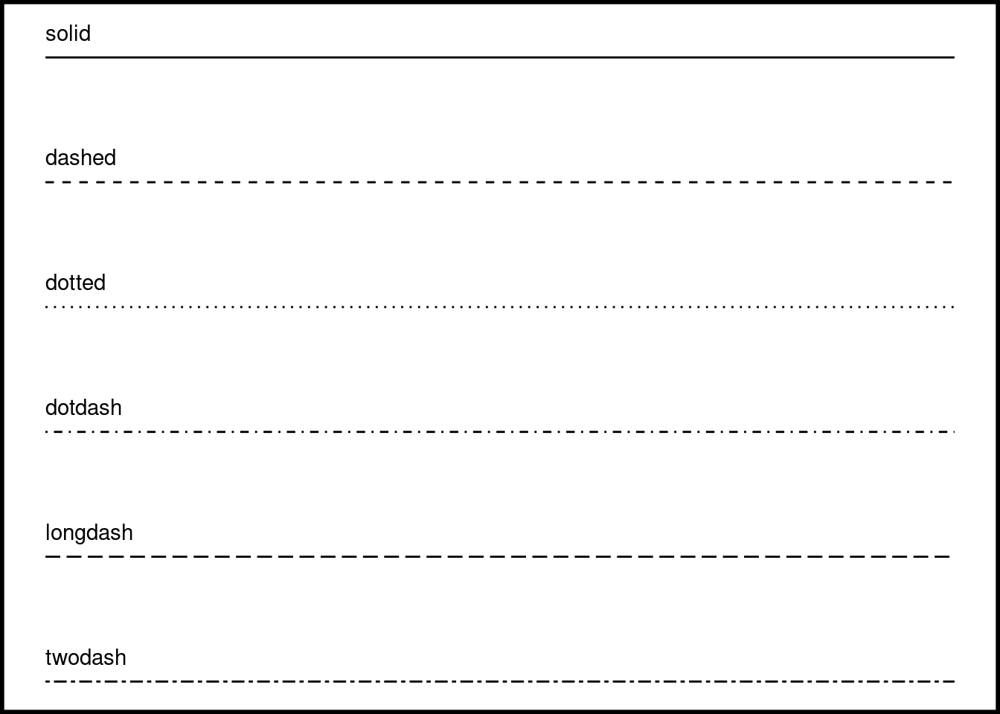
Additionally, you can layer the types of plots together, e.g. plotting the points and lines on the same graph.
ggplot(data = total_incidence, mapping = aes(x = date_tested, y = incidence))+
geom_line(size=1, colour = "red", alpha = 0.5)+
geom_point(size=5, colour = 'blue', shape = 18)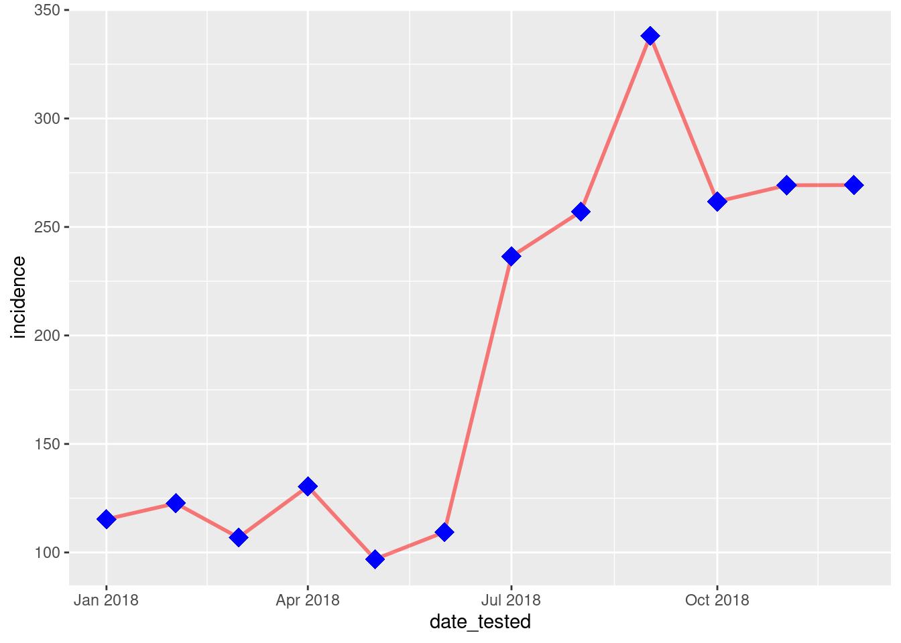
Task 6
- Import the dataset
pf_incidence_nationalwe created in the demo from the data folder and filter to just contain data for under 5’s- Create a line graph plotting the incidence of malaria (y-axis) by date (x-axis)
- Change this to be a green dotted line and increase the line thickness
Solution
pf_incidence_national <- read_csv("outputs/pf_incidence_national.csv") %>% filter(age_group=="u5") ggplot(pf_incidence_national)+ geom_line(mapping = aes(x = date_tested, y = incidence), color = 'green', size = 2)
Themes
Further commands can then be added to the ggplot() object to control
the appearance of the plot. We can label the axis and add a title usinglabs(), and can select different themes for the background
appearance, such as the black and white theme: theme_bw(),
or the dark theme: theme_dark().
ggplot(data = total_incidence, mapping = aes(x = date_tested, y = incidence))+
geom_point(size=2, colour = "blue")+
labs(x = "Date",
y = "Incidence/100,000/month",
title = "Malaria incidence in 2018")+
theme_bw()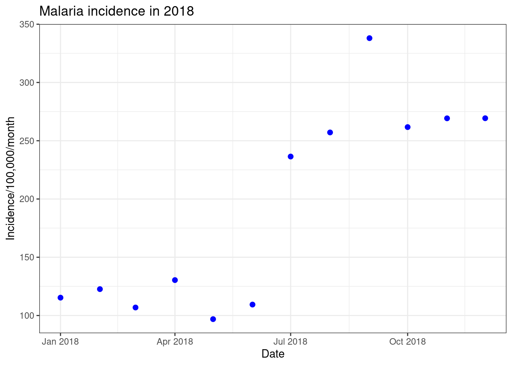
We can control the x and y axis limits by using xlim()
or ylim(). As our x-axis is a date we can control this
using the command scale_x_date(). Otherwise if this was a
continuous variable we could use scale_x_continous() to
control the scale. This command has additional options to control where
you want the breaks in the axis to be and to alter the data labels
# Option 1 using xlim() and ylim()
ggplot(data = total_incidence, mapping = aes(x = date_tested, y = incidence))+
geom_point(size=5, colour = 'blue')+
labs(x = "Date",
y = "Incidence/100,000/month",
title = "Malaria incidence in 2018")+
theme_bw()+
ylim(0,1000)
ggplot(data = total_incidence, mapping = aes(x = date_tested, y = incidence))+
geom_point(size=5, colour = 'blue')+
labs(x = "Date",
y = "Incidence/100,000/month",
title = "Malaria incidence in 2018")+
theme_bw()+
scale_x_date(limit=c(as.Date("2018-01-01"),as.Date("2018-06-01")),
date_breaks = "1 month", date_labels = "%b")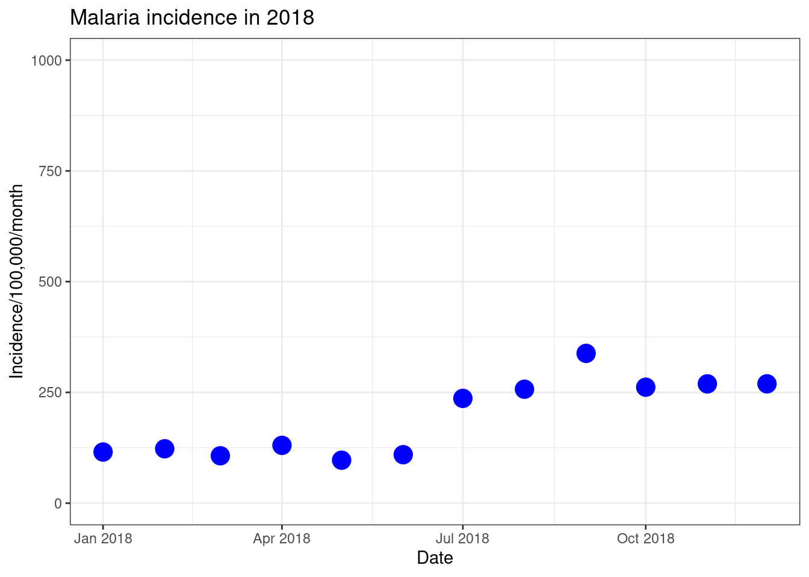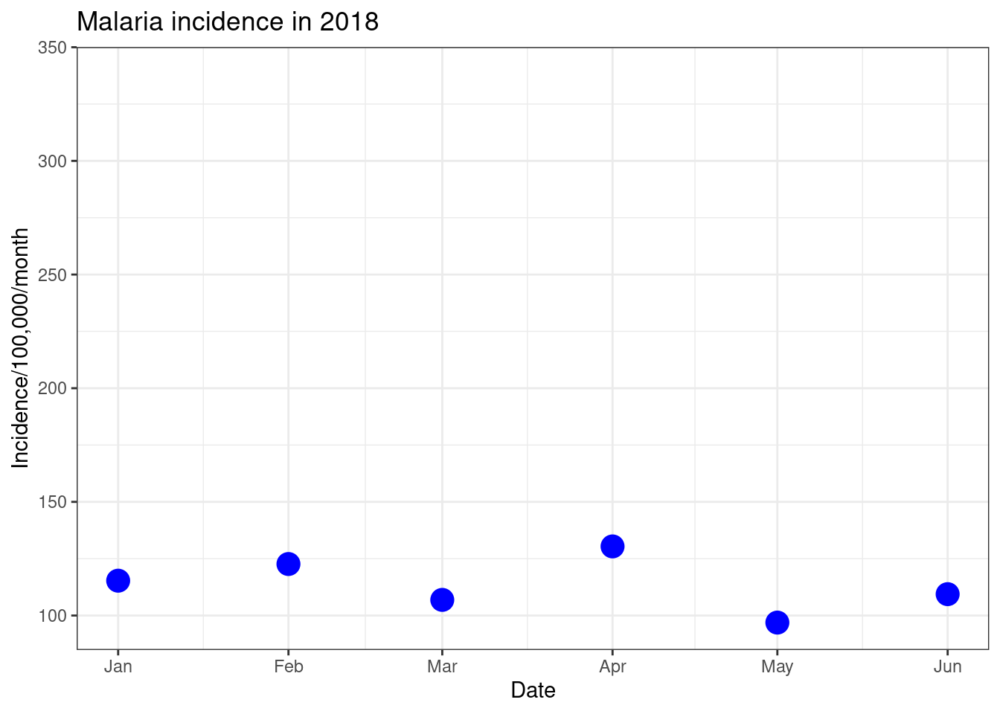
Furthermore, we can control the text of the axis and title within thetheme() command. theme() provides a large
amount of control over the appearance of the plot. Common examples of
what we can do within this command is rotating the x-axis text using the
option angle =, changing the font size usingsize = and the font type using face =.
ggplot(data = total_incidence, mapping = aes(x = date_tested, y = incidence))+
geom_point(size=5, colour = 'blue')+
labs(x = "Month",
y = "Incidence/100,000/month",
title = "Malaria incidence in 2018")+
theme_bw()+
scale_x_date(date_breaks = "1 month", date_labels = "%b")+
theme(axis.text.x = element_text(angle = 90, hjust = 0.5, vjust = 0.5),
axis.title.x = element_text(size = 14,face = 'bold'),
axis.title.y = element_text(size = 14,face = 'bold'),
title = element_text(size = 16,face = 'bold'))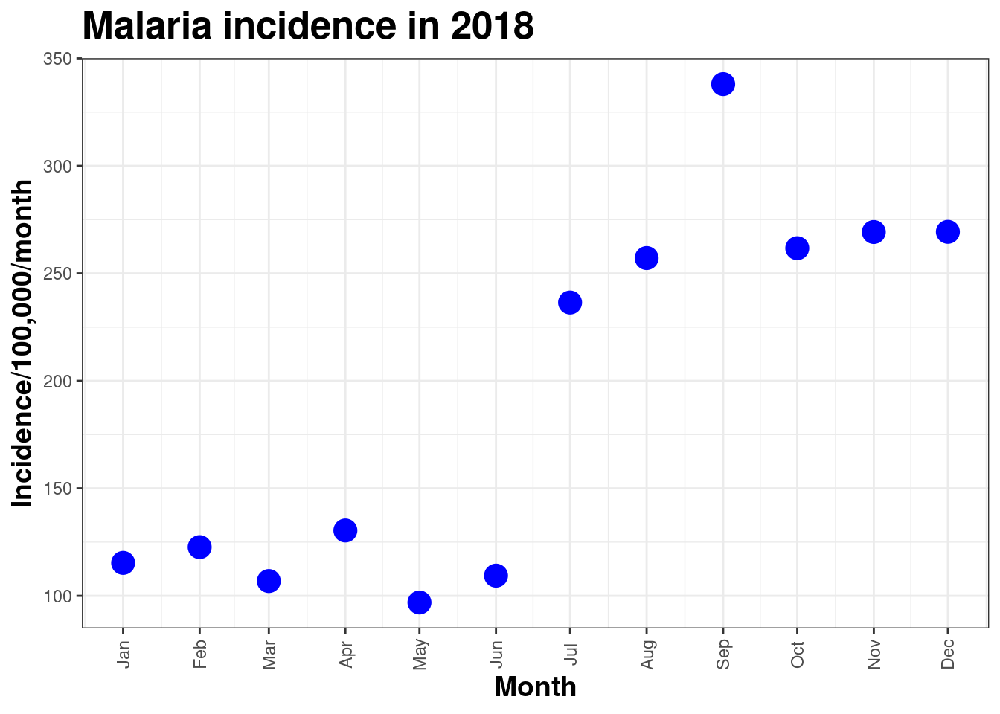
Subgroups and facets
We will now look visualising multiple data trends, for example if you
had incidence data for multiple countries there are various ways you
could show this data. Here we will use the datasetpf_incidence_national.csv we imported earlier, with
incidence for different age groups.
Firstly, we can incorporate the trends for different age_groups on
the same plot by using different colours. We use the colour
argument inside the aes functions and assign it to the
country variable. This results in ggplot plotting a line for each
country in the dataset in a different colour, with a legend added to the
plot.
ggplot(data = pf_incidence_national, mapping = aes(x = date_tested, y = incidence, colour = age_group))+
geom_line(size = 3)+
labs(x = "Date",
y = "Incidence/100,000/month",
title = "Malaria incidence in 2018",
colour = 'Age group')+
theme_bw()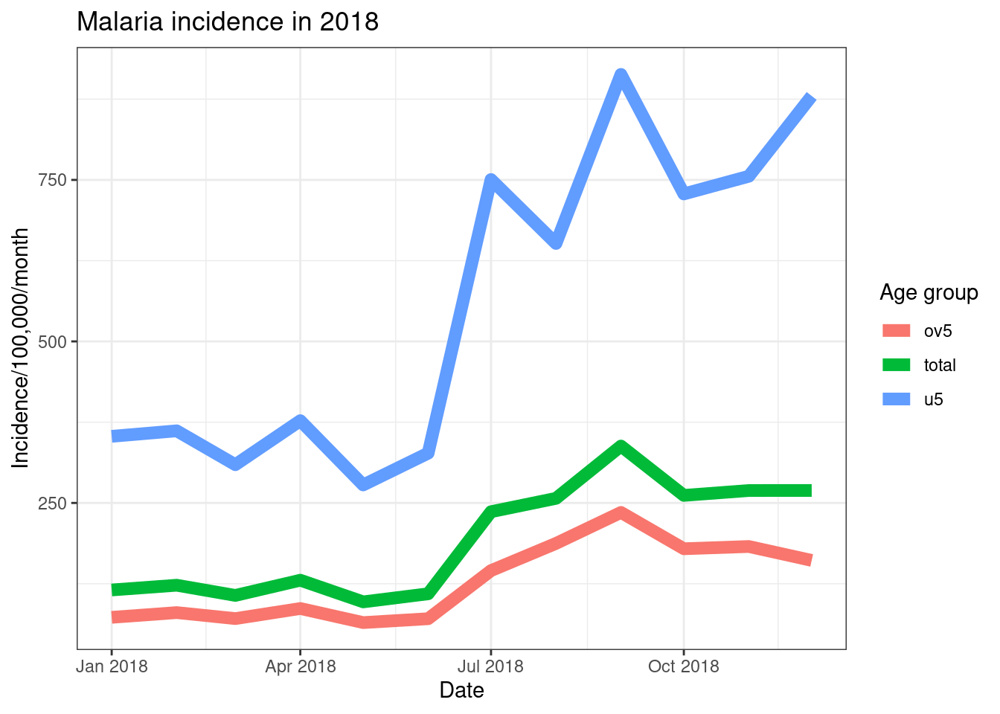
We can control the colours in the plots by using thescale_color_manual() function, and passing it the colours
you wish to use. You can use either the names of colours or the HEX
codes. We can also move the position of the legend to the bottom using
the legend.position = "bottom" command withintheme() and change the title of the legend withinlabs().
ggplot(data = pf_incidence_national, mapping = aes(x = date_tested, y = incidence, colour = age_group))+
geom_line(size = 3)+
labs(x = "Date",
y = "Incidence/100,000/month",
title = "Malaria incidence in 2018",
colour = 'Age group')+
theme_bw()+
theme(legend.position = 'bottom')+
scale_colour_manual(values = c('pink', 'yellow', 'purple'))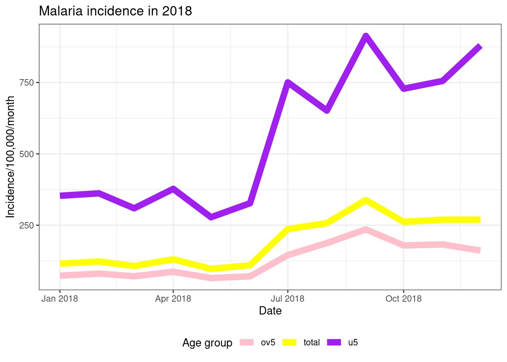
Another way to look at multiple data trends in one plot is to uses facets. This creates separate plots for each “facet”, as part of the overall plot.
ggplot(data = pf_incidence_national, mapping = aes(x = date_tested, y = incidence))+
geom_line(size=2, colour = "blue")+
labs(x = "Date",
y = "Incidence/100,000/month",
title = "Malaria incidence in 2018")+
theme_bw()+
facet_wrap(~age_group)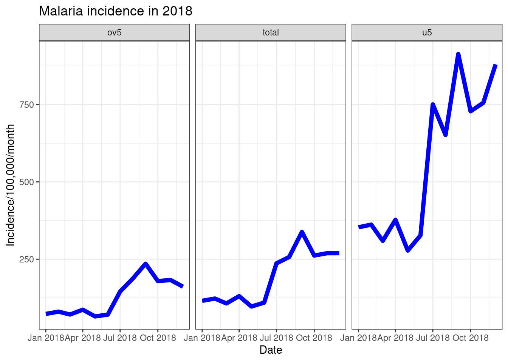
There are various options in facet_wrap(). If you have
largely varying scales between the facets you are plotting, you can plot
these on different scales using either free_y = TRUE, orfree_x = TRUE as options inside offacet_wrap(). You can also specify the number of rows or
columns you want in the plot, e.g. if you had 6 facets you could plot it
as nrow = 2, ncol = 3 ornrow = 3, ncol = 2.
ggplot(data = pf_incidence_national, mapping = aes(x = date_tested, y = incidence))+
geom_line(size=2, colour = "blue")+
labs(x = "Date",
y = "Incidence/100,000/month",
title = "Malaria incidence in 2018")+
theme_bw()+
facet_wrap(~age_group, scales = 'free_y', nrow = 3)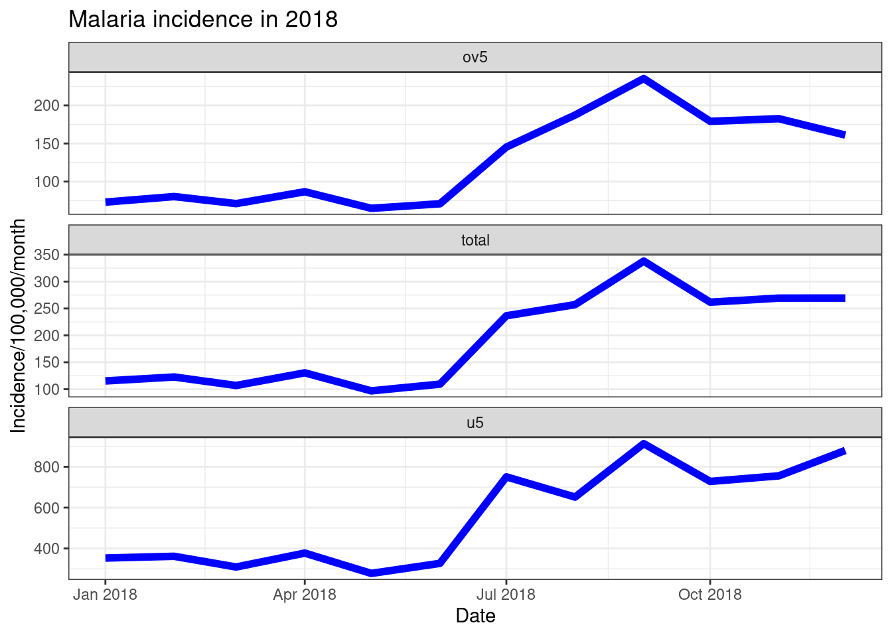
Task 7
- Using the
pf_incidence_nationaldataset create scatter plots the number of confirmed malaria cases(y-axis) by date tested (x-axis), with facets for age group.- Change the colour of the points based on the age group
- Change the axis labels and add a title to the plot
- Change the plot theme to black and white
Solution
pf_incidence_national <- read_csv("outputs/pf_incidence_national.csv") ggplot(pf_incidence_national)+ geom_line(mapping = aes(x = date_tested, y = incidence, color = >age_group))+ facet_wrap(~age_group)+ labs(x = "Date", y = "Incidence per 1000 PYO", title = "Incidence >Rate")+ theme_bw()
Continuous colour scales
Similarly to using the colour option to plot your data
by categorical variables, we can use this options to plot continuous
data on a colour scale. For example, if we wanted colour the points on
our plot of incidence by year based on the total population we can addcolour = population to the aesthetic command.
ggplot(total_incidence, aes(x = date_tested, y = incidence, colour = pop))+
geom_point(size=5)+
labs(x = "Date",
y = "Incidence/100,000/month",
title = "Malaria incidence in 2018")+
theme_bw()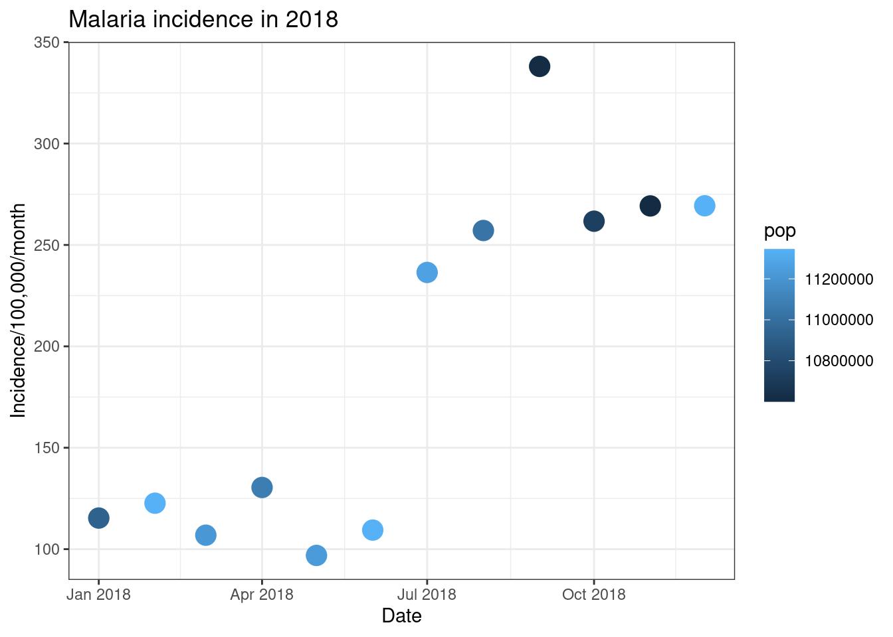
There are then a few options for how we can control the colour scale
of a continuous variable. Firstly we can use thescale_colour_gradient() command to specify the low and high
colours of a gradient from which to build the colour ramp. Secondly
ggpplot allows us to use colour scales from ColorBrewer (https://colorbrewer2.org). This has a wide range of
sequential, diverging and qualitative colour schemes you can use for a
rnage of data and projects. For continuous data this is specified using
the command scale_colour_distiller() and using the optionpalette = to specify the colour palette to use.
ggplot(total_incidence, aes(x = date_tested, y = incidence, colour = pop))+
geom_point(size=5)+
labs(x = "Date",
y = "Incidence/100,000/month",
title = "Malaria incidence in 2018")+
theme_bw()+
scale_colour_gradient(low = "yellow", high = "red")
ggplot(total_incidence, aes(x = date_tested, y = incidence, colour = pop))+
geom_point(size=5)+
labs(x = "Date",
y = "Incidence/100,000/month",
title = "Malaria incidence in 2018")+
theme_bw()+
scale_colour_distiller(palette = 'Greens')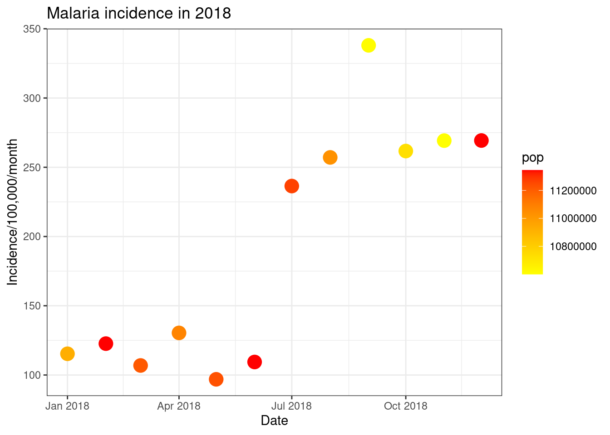
An additional option for- continuous colour scales are the viridis
scales. These are well designed colour scales which are excellent for
graphs and maps. They are colourful, appear uniform in both colour and
black-and-white and are easy to view for persons with common forms of
colour blindness. There are various options withing this package and
they can be used within ggplot through the commandscale_colour_viridis_c().
# Default viridis colour scale
ggplot(total_incidence, aes(x = date_tested, y = incidence, colour = pop))+
geom_point(size=5)+
labs(x = "Date",
y = "Incidence/100,000/month",
title = "Malaria incidence in 2018")+
theme_bw()+
scale_colour_viridis_c()
# Inferno option
ggplot(total_incidence, aes(x = date_tested, y = incidence, colour = pop))+
geom_point(size=5)+
labs(x = "Date",
y = "Incidence/100,000/month",
title = "Malaria incidence in 2018")+
theme_bw()+
scale_colour_viridis_c(option = 'inferno')
# Reversing the direction
ggplot(total_incidence, aes(x = date_tested, y = incidence, colour = pop))+
geom_point(size=5)+
labs(x = "Date",
y = "Incidence/100,000/month",
title = "Malaria incidence in 2018")+
theme_bw()+
scale_colour_viridis_c(option = 'inferno', direction = -1)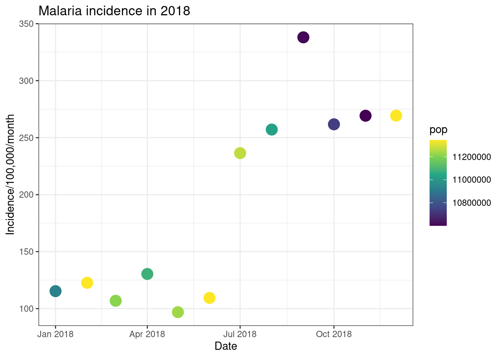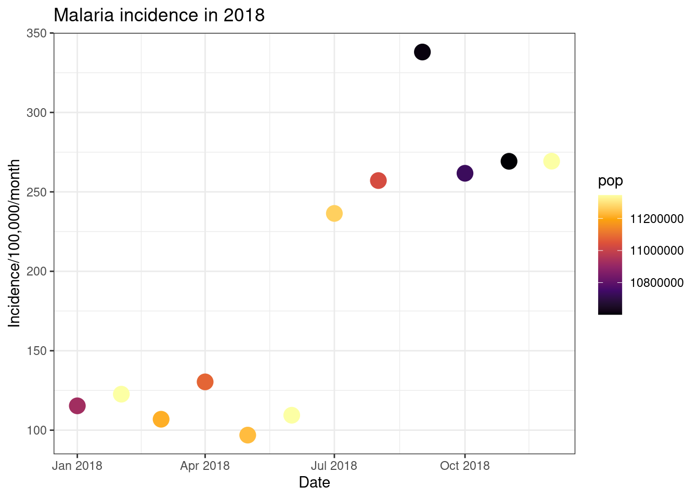
Finally, we can use ggplot to have plot different data on different
layers of the plot. We do this by moving the data = andmapping = arguments from the ggpplot() to the
specific layers such as geom_point(). Here we plot a
scatter plot with different colours for each country, but we add a
smoothed mean line for all of the data.
ggplot()+
geom_point(data = filter(pf_incidence_national, age_group != 'total'),
aes(x = date_tested, y = incidence, colour = age_group), size=4)+
geom_line(data = filter(pf_incidence_national, age_group == 'total'),
aes(x = date_tested, y = incidence), colour = 'grey', size = 2, linetype = 'dashed')+
labs(x = "Date",
y = "Incidence/100,000/month",
title = "Malaria incidence in 2018",
colour = 'Age group')+
theme_bw()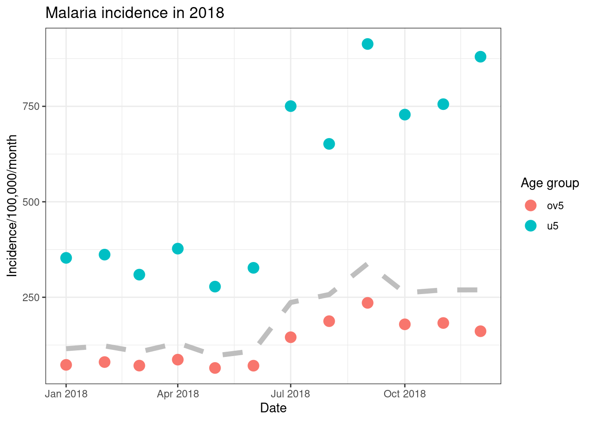
Box plots, bar charts and histograms
ggplot can also be used to create plots summarising the
data and incorporating statistical transformations.
Box plots are a good way of summarising continuous data by discrete
variables. For example, in this dataset we have the number of confirmed
malaria cases in different districts for each month. Inggplot we can use box plots to easiy summarise and
visualise these data.
As in the previous section, we provide ggplot() with the x and y
variables in the aes() argument and R will calculate the
size of the boxes and whiskers. Similarly, you can control the colour of
the lines and the fill colour of the plot by using thecolour and fill arguments.
To look at these plots we will use the “pf_incidence” dataset we
created earlier, with the confirmed cases, incidence, and population by
date and district. We will subset this data to look at all ages
initially. We introduced pipes earlier, these can also be used with
ggplot. Dates in ggplot are treated as continuous variables to here we
must specify group = date_tested to group the data by
date.
filter(pf_incidence, age_group == 'total') %>%
ggplot(aes(x = date_tested, y = conf, group=date_tested))+
geom_boxplot(colour = 'black', fill = 'dark red')+
labs(x = "Date",
y = "Number of cases",
title = "Number of malaria cases by month")+
theme_bw()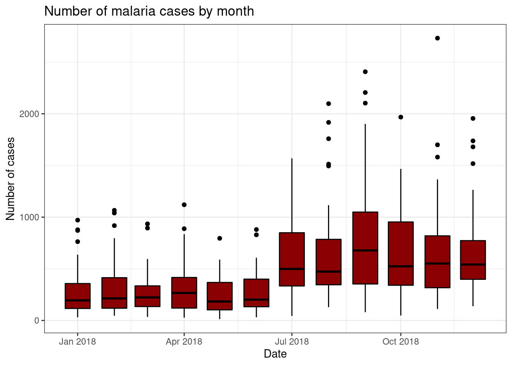
Histograms are created using the geom_histogram()
function. This splits the data into bins using stat_bins()
and counts the number of occurrences in each bin. You can control the
number of bins or the width of the bins using bins andbinwidth respectively. Options such as fill
can also be used to control the fill colour of the bars, along with the
additional options already discussed.
filter(pf_incidence, age_group == 'total') %>%
ggplot(aes(x = conf))+
geom_histogram(bins = 20, fill = 'purple', colour = 'black')+
theme_bw()+
labs(x = "Number tested",
y = "Count",
title = "Histogram of malaria tests conducted")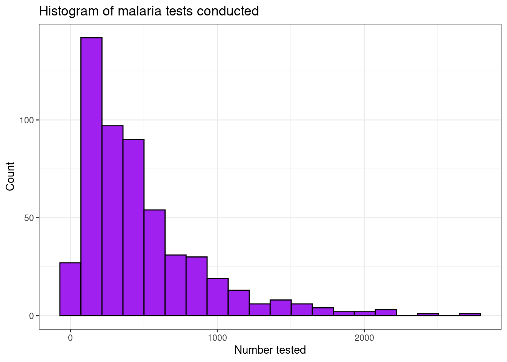
For bar plots the geom_bar()function is used. The
default transformation is to count the number of rows for each category,stat = "bin". There are other transformations we can use,
so if we want to make the heights of the bars to represent values in the
data (provided by the assigning the y aesthetic), we usestat = identity. Here we plot a bar chart of the total
number of malaria tests conducted each month in our routine data.
filter(pf_incidence, age_group == 'total') %>%
ggplot(aes(x = date_tested, y = conf, group=date_tested))+
geom_bar(stat = "identity", fill = "blue")+
labs(x = "Number tested",
y = "Count",
title = "Bar chart of malaria tests conducted per month") +
theme_bw()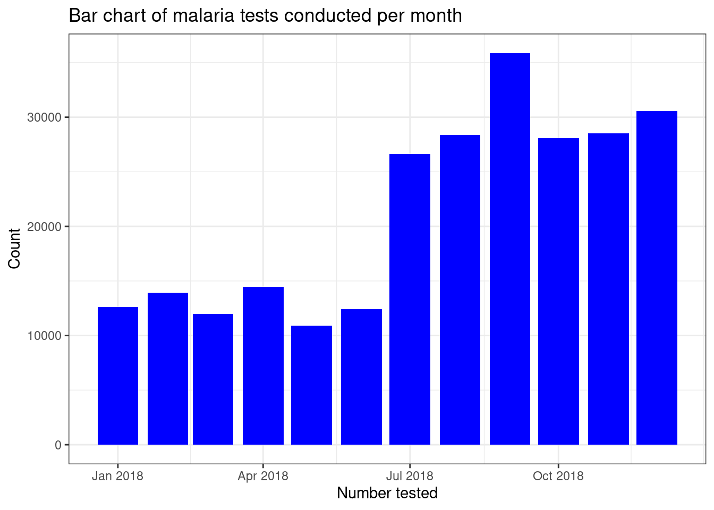
If we want to display different subgroups of data, such as number of
tests by age group, on a bar plot we can either create a stacked bar
plot with different colours representing the subgroups by using thefill = age_group command, or by creating a side-by-side bar
plot by combining fill = age_group with the commandposition = "dodge".
# Stacked bar chart
filter(pf_incidence, age_group != 'total') %>%
ggplot(mapping = aes(x = date_tested, y = conf, fill = age_group))+
geom_bar(stat = "identity")+
theme_bw()+
labs(x = "Number tested",
y = "Count",
title = "Bar chart of confirmed malaria cases per month, by age group",
fill = NULL)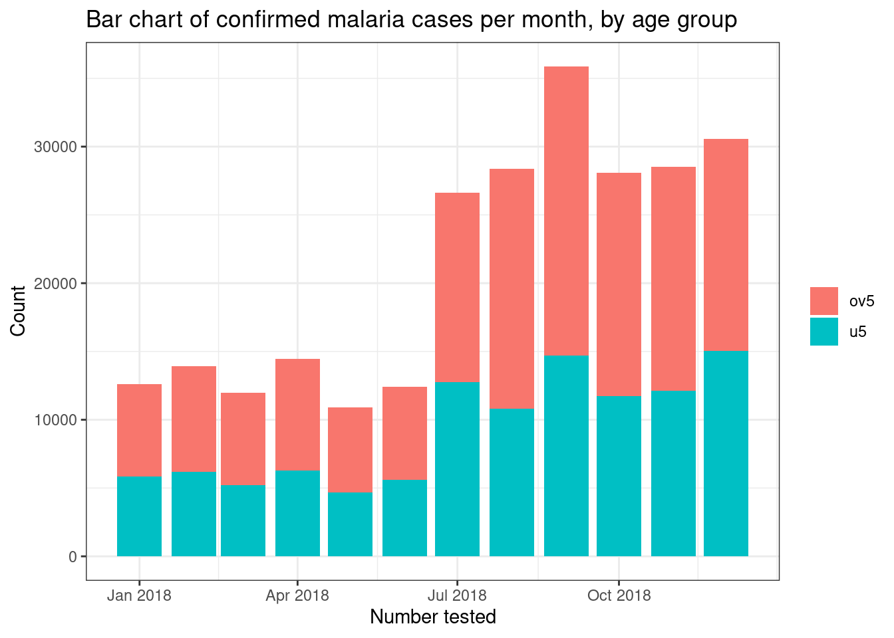
# Side by side bar chart
filter(pf_incidence, age_group != 'total') %>%
ggplot(mapping = aes(x = date_tested, y = conf, fill = age_group))+
geom_bar(stat = "identity", position = "dodge")+
theme_bw()+
labs(x = "Number tested",
y = "Count",
title = "Bar chart of confirmed malaria cases per month, by age group",
fill = NULL) 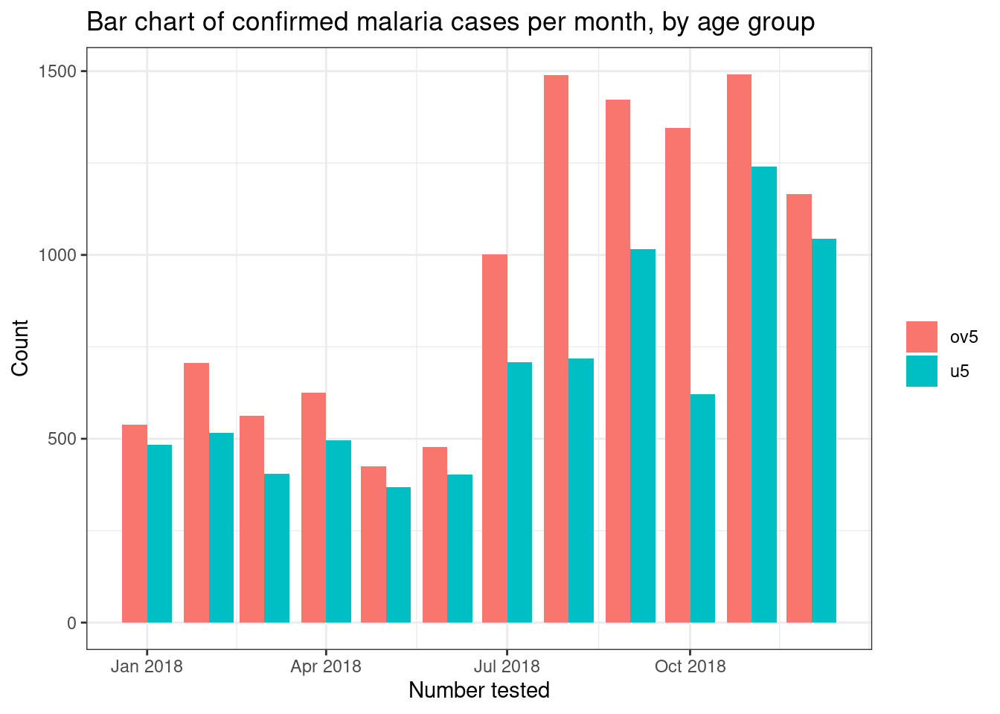
This is just an introduction to what you can achieve for ggplot. For further guidance look at the help pages and the cheat-sheet available athttps://www.rstudio.com/resources/cheatsheets.
Saving plots
There are a couple of different ways you can save plots in R. Firstly
you can save them by opening a png(), jpeg()
or pdf() depending on the file type you want to save. These
commands contain the output file path and the desired height and width
of the figure (optional). It is then followed by the figure, and closing
down the file with dev.off().
png("outputs/malaria_incidence_plot.png")
filter(pf_incidence, age_group != 'total') %>%
ggplot(mapping = aes(x = date_tested, y = conf, fill = age_group))+
geom_bar(stat = "identity", position = "dodge")+
theme_bw()+
labs(x = "Number tested",
y = "Count",
title = "Bar chart of confirmed malaria cases per month, by age group",
fill = NULL)
dev.off()Another option for saving plots is using ggsave(). This
takes the file name, including the extension, that you wish to save and
the plot. Leaving the plot name empty will default to the last plot
created. You can also include commands for the desired height and width
of the figure if required. So saving the above plot would entail:
filter(pf_incidence, age_group != 'total') %>%
ggplot(mapping = aes(x = date_tested, y = conf, fill = age_group))+
geom_bar(stat = "identity", position = "dodge")+
theme_bw()+
labs(x = "Number tested",
y = "Count",
title = "Bar chart of confirmed malaria cases per month, by age group",
fill = NULL)
ggsave("outputs/malaria_incidence_plot.png")Task 8
- Import the
pf_incidencedataset we created in demo 2.- Create a box plot of the confirmed malaria cases for children under 5 by month
- Using the
pf_incidencedataset create a stacked bar chart of confirmed > malaria cases in children under 5 and over 5’s by monthSolution
pf_incidence <- read_csv("outputs/pf_incidence.csv") %>% mutate(month = month(date_tested, label = TRUE, abbr = TRUE), year = year(date_tested)) pf_incidence %>% filter(age_group == "u5") %>% ggplot()+ geom_boxplot(mapping = aes(x = month, y = conf))+ labs(y = "Confirmed Cases")+ theme_bw() ggplot(pf_incidence)+ geom_boxplot(mapping = aes(x = month, y = conf, fill = age_group))+ labs(y = "Confirmed Cases under 5")+ theme_bw()
Tip: You can automate generating many plots (e.g., for each country or each
variable) by writing a function or loop. For instance, you might loop through a list of
countries, create four different plots for each, and then save them all in a single PDF.
This can be done by opening a PDF device (pdf("plots.pdf")), producing plots
in a loop, and then closing the device with dev.off(), or by using
ggsave() inside your loop.
Further Resources
Here are some recommended resources to explore and deepen your understanding of ggplot2 and data visualizations:
- RStudio ggplot2 Cheat Sheet – Handy reference for geoms, scales, and themes.
-
R for Data Science: Data Visualization
– In-depth explanation of
ggplot2concepts and examples. - R Graph Gallery – Examples of many different plot types, with sample code to get you started.